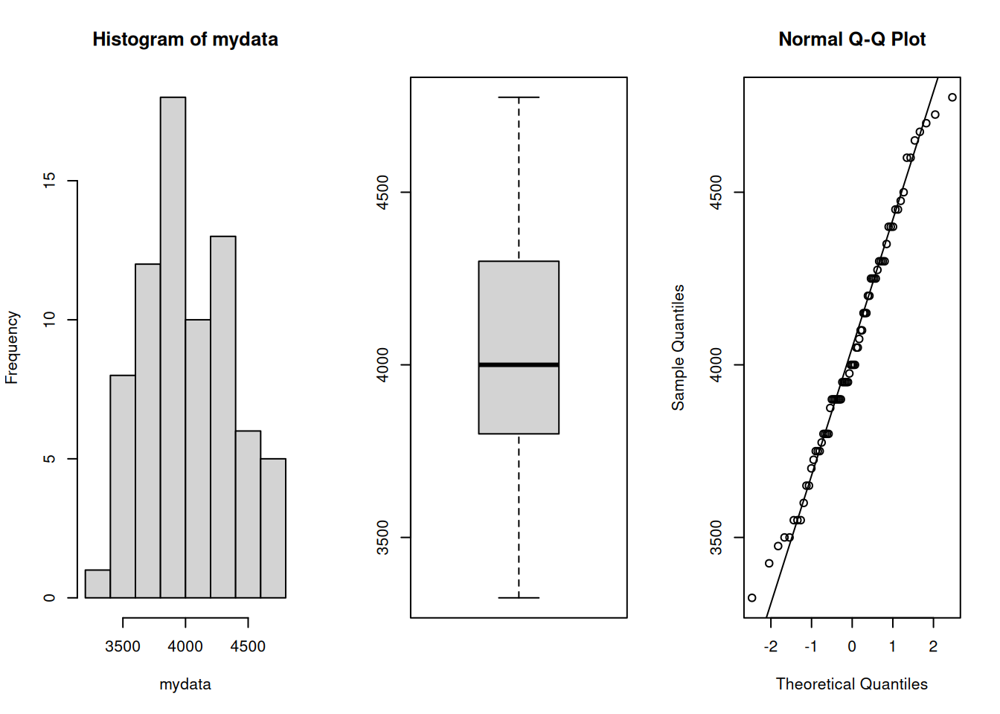

37 Two-way ANOVA
A two-way ANOVA is used to compare means of a continuous outcome variable which is (potentially) being affected by two different categorical predictor variables at the same time.
For example, we could evaluate the effect of sex and species on penguin body mass.
One of the key outputs of a two-way ANOVA is what’s called an interactive effect, which evaluates if each of the categorical factors influences the impact of the other on your outcome variable.
IMPORTANT!
You can only estimate an interactive effect with a two-way ANOVA.
Conducting two separate one-way ANOVAs will only tell you if there is a significant main effect of each variable individually, but not if there is a significant interaction.
37.1 Prepare and read in your data
In order to conduct a two-way ANOVA in R, you will need to format your Excel file such that:
- All of your observations for a given level of measurement (e.g. plant-level vs. leaf-level) are contained within a single sheet that can be exported as a csv file.
- Each predictor (or independent) variable has its own column.
- Each variable that you may need to filter/subset by has its own column.
- There are no extra rows or spaces - only your column names in row 1 and your data observations in rows 2 through n.
Depending on how you originally recorded your data in Excel, this may require you to combine observations made in different sheets, and additional columns (e.g. for week).
Once you have formatted your data properly, you can export the sheet(s) as a csv file and upload it (them) to the R server.
Then you can read in your data using the usual method.
peng_data <- read.csv("data/palmer_penguin_data.csv")37.2 Model notation in R
Last week you learned about model notation in R and use it to write the model for a linear regression and a one-way ANOVA. You will also need to use it for the two-way ANOVA.
As a reminder:
In R, the formulas for statistical models are generally written using the
~symbol (called a “tilde”).
A simple model with soil carbon as the outcome variable and tree density as the predictor variable might look like this:
body_mass ~ species
If you were reading the model formula aloud, you would say: “penguin body mass is predicted by species”
37.3 Check the model assumptions
Like all statistical tests, a two-way ANOVA assumes that your data are independent. (You can ask Doug and/or Ian if they are comfortable with you relaxing that assumption for plants that share a pot.)
Like other parametric tests, a two-way ANOVA assumes that your data - for each sample/sub-group - are Normally-distributed. This is more important for smaller datasets (<30 points), but can be ignored for larger datasets.
You should use your examine_norm() function that you wrote in week 3, and reused again in weeks 4 and 6 to ensure that your data are Normally distributed.
Although our sample sizes here (from 34 to 73) are large enough that we don’t need to check Normality, we’ll do it anyway for completeness.
# Remove NAs
peng_data <- na.omit(peng_data)
# Subset data into subgroups to check Normality
peng_data_male_adelie <- subset(peng_data, sex == "male" & species == "Adelie")
peng_data_female_adelie <- subset(peng_data, sex == "female" & species == "Adelie")
peng_data_male_gentoo <- subset(peng_data, sex == "male" & species == "Gentoo")
peng_data_female_gentoo <- subset(peng_data, sex == "female" & species == "Gentoo")
peng_data_male_chinstrap <- subset(peng_data, sex == "male" & species == "Chinstrap")
peng_data_female_chinstrap <- subset(peng_data, sex == "female" & species == "Chinstrap")
# Check Normality
examine_norm(peng_data_male_adelie$body_mass_g)
#>
#> Shapiro-Wilk normality test
#>
#> data: mydata
#> W = 0.98269, p-value = 0.416
#> Warning in ks.test.default(mydata, "pnorm", mean = mean_md,
#> sd = sd_md): ties should not be present for the one-sample
#> Kolmogorov-Smirnov test
#>
#> Asymptotic one-sample Kolmogorov-Smirnov test
#>
#> data: mydata
#> D = 0.084147, p-value = 0.6795
#> alternative hypothesis: two-sidedI’m only printing the results for one of the samples (male Adelie penguins) here, but unless your sample sizes are large, you should check all of them.
37.4 Run the test
To run a two-way ANOVA with an interactive effect in R, the model notation should have a * between your two predictor variables (in this case, sex and species), as shown below.
Just like last week with the one-way ANOVA, you will need to save your model output as an object, and use the summary() function to examine it.
mod <- aov(body_mass_g ~ sex * species, data = peng_data)
summary(mod)
#> Df Sum Sq Mean Sq F value Pr(>F)
#> sex 1 38878897 38878897 406.145 < 2e-16 ***
#> species 2 143401584 71700792 749.016 < 2e-16 ***
#> sex:species 2 1676557 838278 8.757 0.000197 ***
#> Residuals 327 31302628 95727
#> ---
#> Signif. codes:
#> 0 '***' 0.001 '**' 0.01 '*' 0.05 '.' 0.1 ' ' 1The output will have four rows of results:
- one for each of the main effects (e.g.
sexandspecies) - one for the interaction (
sex:species) - one for the residuals (“error” or variation that is not explained in the model)
The four columns should look familiar to you from the one-way ANOVA. They are:
- Df (degrees of freedom)
- sum Sq (sum of squared error)
- Mean Sq (mean squared error)
- F value (the test statistic)
- Pr(>F) (the p-value)
Warning!
If the interaction is not significant, then you should rerun the model, without the interaction term.
This is done by changing the * to a +, as shown below.
Although our interaction for sex and species in the penguin data is highly significant, the code below shows how you would run a two-way ANOVA without an interactive effect.
mod2 <- aov(body_mass_g ~ sex + species, data = peng_data)
summary(mod2)
#> Df Sum Sq Mean Sq F value Pr(>F)
#> sex 1 38878897 38878897 387.9 <2e-16 ***
#> species 2 143401584 71700792 715.3 <2e-16 ***
#> Residuals 329 32979185 100241
#> ---
#> Signif. codes:
#> 0 '***' 0.001 '**' 0.01 '*' 0.05 '.' 0.1 ' ' 137.5 Post-host test
Remember, that an ANOVA only tells you if there is a significant effect between any groups, but not which groups are significantly different to each other.
If your two-way ANOVA is significant, you will need to conduct a post-hoc test to determine which groups are significantly different.
The post-hoc test for a two-way ANOVA is the same one that we used last week for the one-way ANOVA: Tukey’s honestly significant difference test, which is done with the function TukeyHSD().
TukeyHSD(mod)
#> Tukey multiple comparisons of means
#> 95% family-wise confidence level
#>
#> Fit: aov(formula = body_mass_g ~ sex * species, data = peng_data)
#>
#> $sex
#> diff lwr upr p adj
#> male-female 683.4118 616.7003 750.1233 0
#>
#> $species
#> diff lwr upr p adj
#> Chinstrap-Adelie 26.92385 -80.0258 133.8735 0.8241288
#> Gentoo-Adelie 1377.65816 1287.6926 1467.6237 0.0000000
#> Gentoo-Chinstrap 1350.73431 1239.9964 1461.4722 0.0000000
#>
#> $`sex:species`
#> diff lwr
#> male:Adelie-female:Adelie 674.6575 527.8486
#> female:Chinstrap-female:Adelie 158.3703 -25.7874
#> male:Chinstrap-female:Adelie 570.1350 385.9773
#> female:Gentoo-female:Adelie 1310.9058 1154.8934
#> male:Gentoo-female:Adelie 2116.0004 1962.1408
#> female:Chinstrap-male:Adelie -516.2873 -700.4449
#> male:Chinstrap-male:Adelie -104.5226 -288.6802
#> female:Gentoo-male:Adelie 636.2482 480.2359
#> male:Gentoo-male:Adelie 1441.3429 1287.4832
#> male:Chinstrap-female:Chinstrap 411.7647 196.6479
#> female:Gentoo-female:Chinstrap 1152.5355 960.9603
#> male:Gentoo-female:Chinstrap 1957.6302 1767.8040
#> female:Gentoo-male:Chinstrap 740.7708 549.1956
#> male:Gentoo-male:Chinstrap 1545.8655 1356.0392
#> male:Gentoo-female:Gentoo 805.0947 642.4300
#> upr p adj
#> male:Adelie-female:Adelie 821.4664 0.0000000
#> female:Chinstrap-female:Adelie 342.5279 0.1376213
#> male:Chinstrap-female:Adelie 754.2926 0.0000000
#> female:Gentoo-female:Adelie 1466.9181 0.0000000
#> male:Gentoo-female:Adelie 2269.8601 0.0000000
#> female:Chinstrap-male:Adelie -332.1296 0.0000000
#> male:Chinstrap-male:Adelie 79.6351 0.5812048
#> female:Gentoo-male:Adelie 792.2606 0.0000000
#> male:Gentoo-male:Adelie 1595.2026 0.0000000
#> male:Chinstrap-female:Chinstrap 626.8815 0.0000012
#> female:Gentoo-female:Chinstrap 1344.1107 0.0000000
#> male:Gentoo-female:Chinstrap 2147.4564 0.0000000
#> female:Gentoo-male:Chinstrap 932.3460 0.0000000
#> male:Gentoo-male:Chinstrap 1735.6917 0.0000000
#> male:Gentoo-female:Gentoo 967.7594 0.0000000The Tukey HSD test will provide contrast results for each main effect group and all the subgroups in the interaction.
In this case:
- Both sexes are different
- Gentoo is different to the other two species, but Adelie and Chinstrap are not different to each other
- All of contrasts between specific sex-species subgroups are significantly different to each other except for two (female Chinstrap vs. female Adelie and male Chinstrap vs. male Adelie - this should not be surprising based on the main effect results).